Lâmina — Superfície arquitetônica contínua
Composição e materiais.
Etapa 1.
Recomendação: composição A, imersiva. A arquitetura permanece visível e a tipografia ocupa a água. A composição B oferece uma alternativa editorial mais contida. Os estudos não implementam a coreografia WebGL/GSAP da Etapa 2.
Os links para o servidor requerem npm.cmd run dev. As capturas e este documento abrem localmente sem servidor. Clique em qualquer captura para abrir o PNG em resolução original.
Comparação lado a lado
Mesmos viewports e DPR 1. As capturas individuais permanecem intactas; a prancha só as dispõe lado a lado e acrescenta os rótulos.
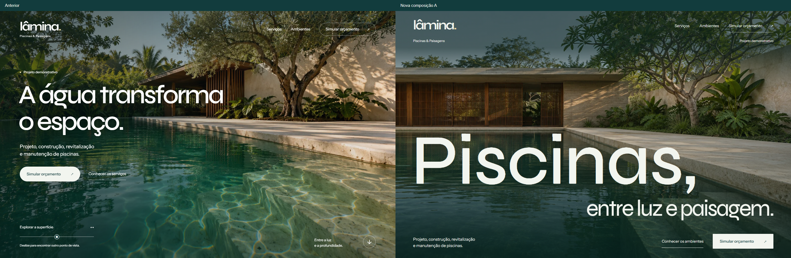
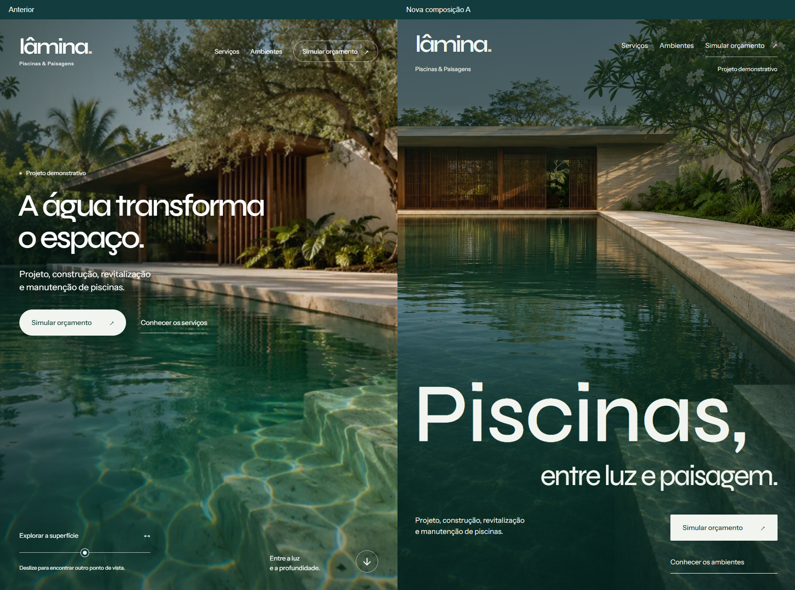
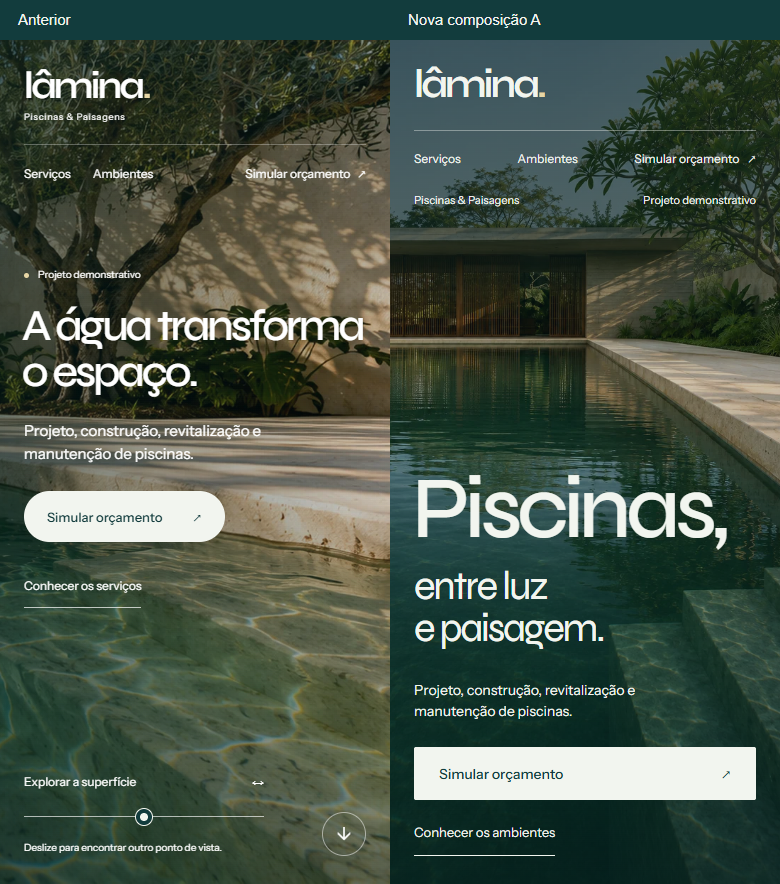
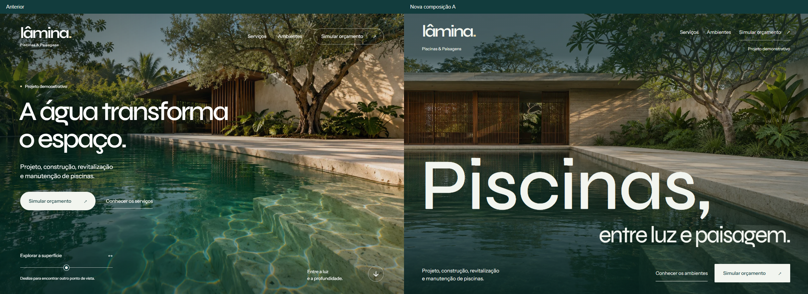
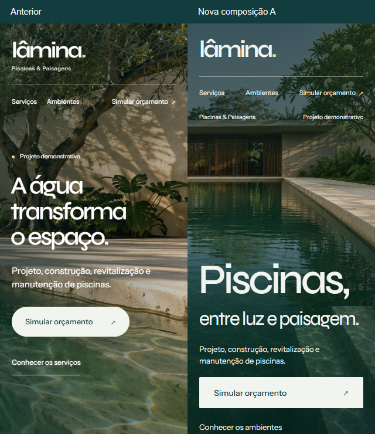
Composições e momentos do percurso

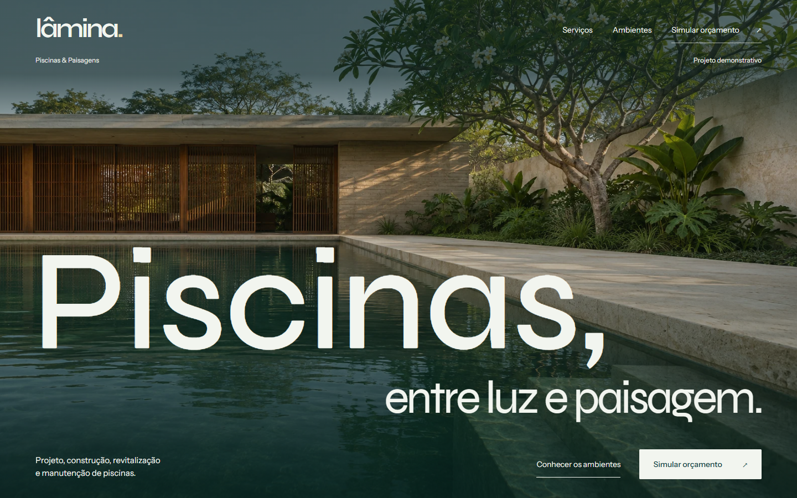

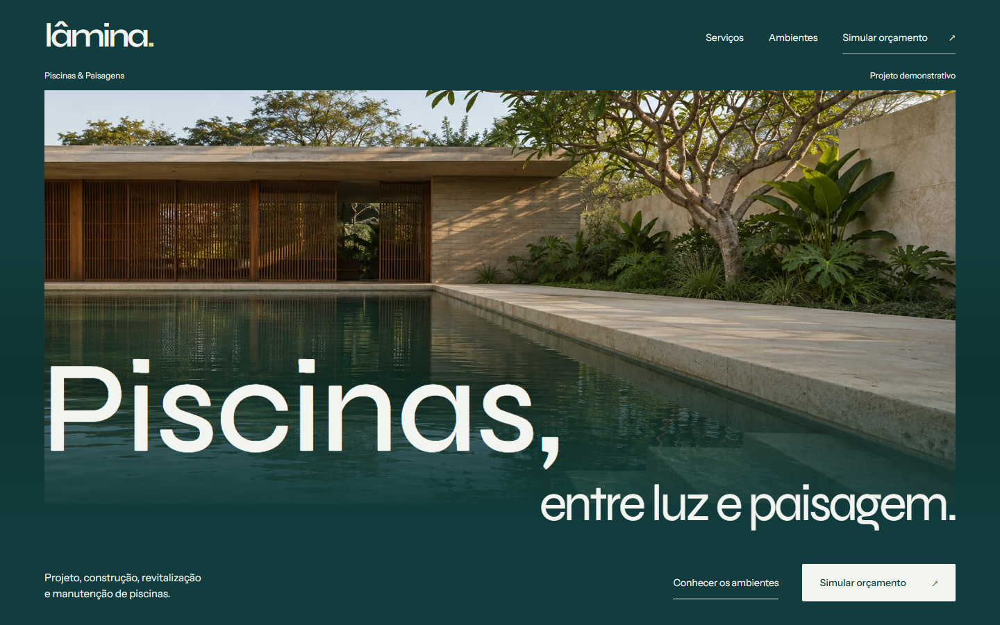

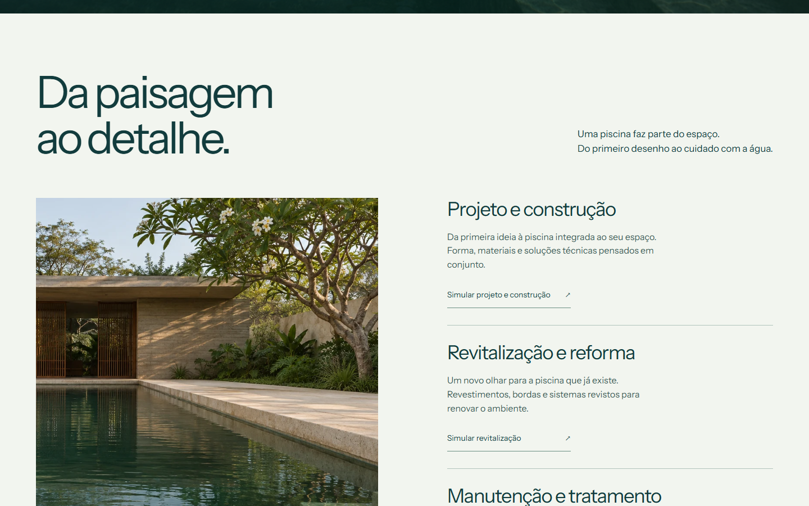

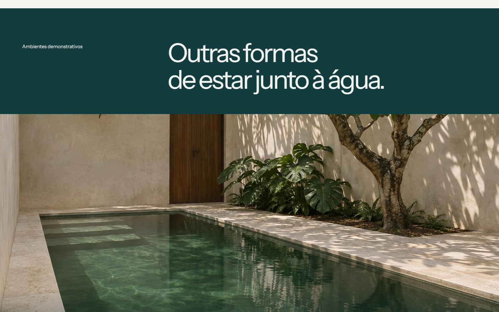

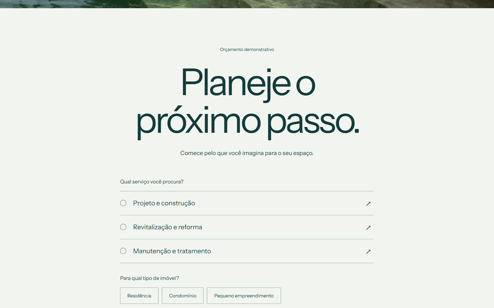

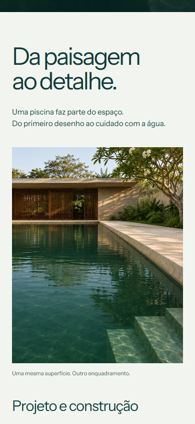
Percurso completo
Abrir página completa — desktop
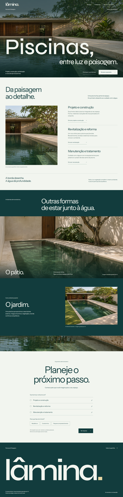
Abrir página completa — tablet
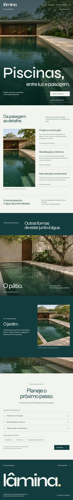
Abrir página completa — mobile
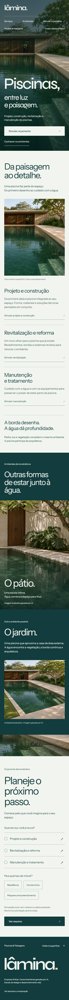
Matriz de imagem e preservação espacial
Desktop e tablet horizontal usam a mesma matriz horizontal. Mobile e tablet vertical usam a matriz vertical. A futura passagem precisa preservar o canto da piscina e a borda em cada matriz, sem trocar de fotografia no meio do movimento.
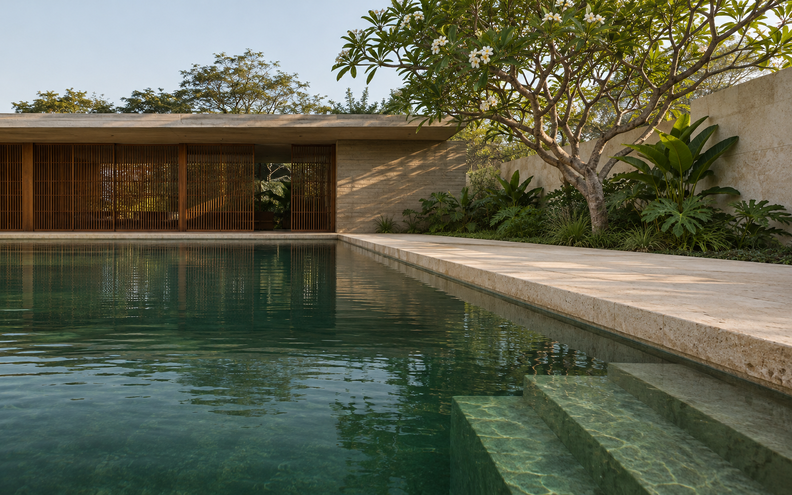
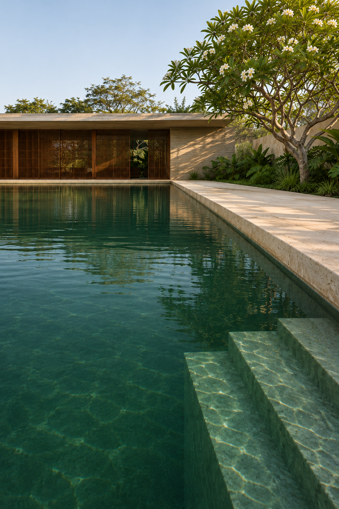
Os originais verticais e a vista elevada foram reenquadrados com IA; não são reconstruções geométricas certificadas. A vista elevada do jardim é outra câmera e está restrita à apresentação dos ambientes.
Recursos preparados
| Recurso | Dimensões | Peso | Função |
|---|---|---|---|
| superficie-desktop.webp | 1586 × 992 | 355.5 KiB | Hero desktop; matriz de enquadramento desktop. |
| superficie-tablet-horizontal.webp | 1280 × 960 | 289.0 KiB | Recorte 4:3 do mestre horizontal; preserva canto da piscina, pavilhão e borda. |
| superficie-tablet-vertical.webp | 1024 × 1365 | 269.0 KiB | Recorte 3:4 da tomada vertical; retém pavilhão, diagonal da borda e degraus. |
| superficie-mobile.webp | 792 × 1188 | 189.4 KiB | Tomada vertical completa em 2:3, sem recorte panorâmico ampliado. |
| enquadramento.webp | 790 × 992 | 201.6 KiB | Destino editorial da cena desktop; mesma fotografia, não uma nova perspectiva. |
| enquadramento-vertical.webp | 820 × 1100 | 191.1 KiB | Destino editorial de mobile e tablet vertical; mesma matriz vertical do hero. |
| patio.webp | 1440 × 960 | 218.9 KiB | Segundo ambiente demonstrativo, distinto do hero. |
| jardim.webp | 1440 × 960 | 405.9 KiB | Vista elevada do ambiente de jardim, não utilizada na passagem óptica por ser outra câmera. |
| material.webp | 952 × 600 | 114.0 KiB | Detalhe de água, borda e degraus para concluir a narrativa; mesma matriz horizontal. |
Verificação
9 verificações funcionais; 0 falhas. 0 violações axe nas duas composições em desktop, tablet e mobile. 0 cenários com overflow. Capturas de produção: Chromium 158.0.8127.18.
Versão anterior preservada no commit 1b5b6d455bd503dfce76222f7faf179b569e30b3. Nenhum arquivo previamente rastreado foi modificado. Sem commits, push ou deploy.
Limites: o estudo é estático. Não certifica a futura passagem, desempenho de GPU, aparelhos físicos, Safari real ou uso com leitor de tela. Os originais disponíveis limitam o detalhe em telas de alta densidade e em 1920px.